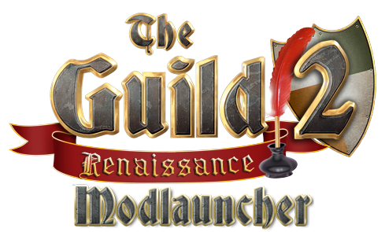

produced by
RUNEFORGE Game Studio
published by
Nordic Games GmbH
Project Lead
Heinrich Meyer
Programming
Fabian Hackhofer
Programming (ModLauncher)
Kristian Ziegenmeyer
Scripting
Heinrich Meyer
Jakob Marczynski
Jean-Luc Preikschas
Fabian Hackhofer
Artist
Stephan Kubisch
Jakob Marczynski
Quality Assurance
Tobias Horn
Beta-Testers
Andrej Alschevski (Begemont)
Christian Lobbel (chemiestudent)
David Haupt (david234)
Sebastian Helfers (HAMMA)
Julian Tischer (JulianT)
Dennis Müller (Napi)
Stefanie Behn (Neromi)
Dennis Tittkemeyer (PhenomTaker)
Stefan Schuller (Sagisa)
David Beul (SirWayne0815)